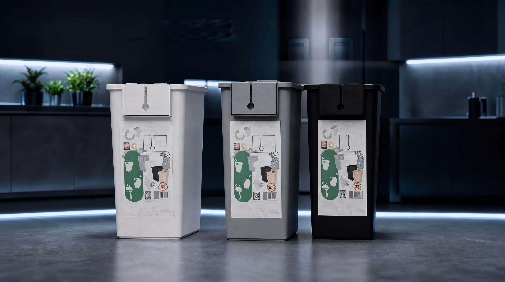

One platform / multiple environmentsWhite. Graphite. Obsidian.
A compact waste-handling system with an integrated refill ecosystem.
04 / Priority applications
Four primary B2B environments where a continuous supply and controlled removal workflow can make daily servicing more consistent.
Explore the system →
A compact waste-handling system with an integrated refill ecosystem.